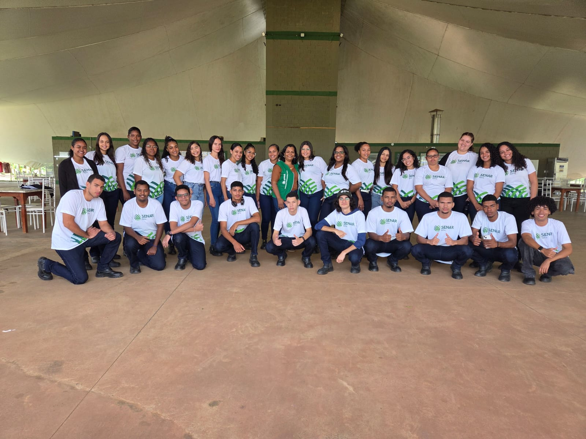

Imagine o primeiro dia em um novo trabalho. O coração acelerado, a cabeça cheia de perguntas: “Será que vou dar conta? E se eu falar algo errado? E se eu não souber fazer as coisas?”
Logo nas primeiras orientações se percebe que o verdadeiro desafio nunca está nas tarefas, está na comunicação.
Uma tarefa explicada às pressas gera um retrabalho que ninguém queria. Um prazo combinado de um jeito é entendido de outro. Um colega interpreta mal uma mensagem e a resposta chega mais dura do que deveria. Alguém se sente ignorado numa reunião. Outro acredita que já sabe tudo, sem perceber o quanto ainda tem a aprender.
Depois de um tempo se compreende que comunicar bem não é só falar. É entender como nossa mente cria interpretações próprias. É perceber o que existe por trás das palavras. É discordar sem ferir, defender uma ideia sem desrespeitar, transformar conflito em aprendizado. É saber dar e receber feedback — e, às vezes, ter a coragem de mudar de opinião.
Comunicar bem é construir relações, criar confiança, transformar ambientes. E tudo é um processo de lapidação do ser, através do autoconhecimento, estudo e ajustes intencionais.
Este é o resultado de um fórum realizado por uma turma que decidiu ir além da fala e estudar as ferramentas por trás de uma boa comunicação. O que ficou desse encontro é este Guia Prático de Ferramentas da Comunicação — aberto a qualquer pessoa que queira reconhecer vieses, escutar de verdade, falar com clareza e firmeza, dar feedback que constrói e transformar diferenças em construção conjunta.
Porque comunicação não é apenas uma habilidade profissional — é uma forma de transformar como trabalhamos, convivemos e crescemos.
Sejam bem-vindos.

Este projeto nasceu de um fórum realizado pela turma do Programa Jovem Aprendiz — SENAR/BA, sob orientação da Instrutora Cássia Ribeiro.
Veja agora as ferramentas que a turma construiu para você.